This software is purely research experimentation and is provided strictly "AS IS". It may damage your device, CNC machine, spindle, laser diode, workpiece, or computer. The goal of this project is the exploration of what is possible in unified in-browser digital fabrication. Users accept all risks and agree to hold authors, contributors, and developers completely harmless regardless of outcome. USE AT YOUR OWN RISK.
All comments, feedback, and discussion are encouraged and welcome in community posts.
>
All comments, feedback, and discussion are encouraged and welcome in community posts.
Community Rules:
1. Open Source & Copyleft: Keep all innovations accessible and free for everyone.
2. Constructive Community: Keep all commentary positive, helpful, and respectful.
3. Action-Oriented Collaboration: Write code to fix issues and share your solutions back to the group.
JumpStart 3D CAD + Vellum Vector Studio + Continuous Layer Extension (CLE)
Version 01.00.66 — Windows 11 Edition
JSVCLE Studio is a unified, all-in-one digital fabrication workspace designed for makers, CNC machinists, woodworkers, and laser engravers. It combines three powerful engineering applications into a single synchronized desktop environment:
Dev/index.htm): An intuitive, precision boundary-representation (B-Rep) 3D parametric CAD modeling application for mechanical design, solids, extrusions, revolving, and Boolean operations.Vellum/index.htm): A dedicated 2D vector graphic and laser studio featuring curve drawing, text formatting, path booleans, DXF/SVG import/export, and automatic raster-to-vector tracing.

Before running the installer, ensure your workstation meets the following specifications:
| Component | Minimum Requirements | Recommended Requirements |
|---|---|---|
| Operating System | Windows 11 (64-bit, Version 22H2+) | Windows 11 Pro (64-bit, latest release) |
| Processor (CPU) | Intel Core i7 (8-Way / 8 Cores) or AMD Ryzen 7 | Intel Core i9 (24-Way / 24 Cores @ 4.0 GHz+) or AMD Ryzen 9 |
| System Memory (RAM) | 16 GB DDR4/DDR5 | 32 GB+ High-Speed DDR5 |
| Storage (SSD) | 2 GB free on High-Speed SATA/NVMe SSD | Ultra-Fast PCIe Gen 4/5 NVMe SSD |
| Graphics (GPU) | WebGL 2.0 compatible (Intel Iris Xe or dedicated) | NVIDIA GeForce RTX 3060+ / AMD Radeon RX 6700+ |
| Display Resolution | 1920 × 1080 (Full HD) | 2560 × 1440 (2K QHD) or 3840 × 2160 (4K UHD) |
| Ports | 1× USB 2.0/3.0 port (for CNC USB Serial communication) | USB 3.0 + Wi-Fi 6 (for FluidNC WebSocket) |


JSVCLE_Experimental_v01.00.66.exe](file:///d:/CLEJS/dist/JSVCLE_Experimental_v01.00.66.exe) in your distribution folder or download location..exe installer. If prompted by Windows User Account Control (UAC), click Yes to allow installation for All Users.The installer presents a System Requirements Notice dialog detailing the minimum (i7 8-way, 16GB RAM) and recommended (i9 24-way, 32GB RAM) specifications. Click OK to begin configuration.
By default, JSVCLE Studio installs to:
``
C:\JSVCLE
`
You can click Browse... to choose any other drive or directory on your system.
Step 4: Installation & Background Service Setup
Click Install. The installer automatically extracts:
- JumpStart 3D and the CLE suite (
Dev/)
Vellum Vector Studio ( Vellum/)
Local Background Server and Embedded Python Runtime ( tools/)
Machine Vault and Tool Library ( vault/)
Comprehensive Documentation ( docs/)
Windows startup entries in {autostartup}\CLE_Server so the hardware service starts quietly whenever you log into Windows.
Desktop and Start Menu shortcuts for all users.
Step 5: Launching the Application
On the final wizard page, leave Launch JSVCLE Studio checked and click Finish. The background server starts automatically, and the application opens in your default browser.
4. Initial Configuration

Figure: Ug Initial Config
4.1 Connecting to Your Machine
- Open JSVCLE Studio.
- Click the CLE Suite tab in the top workspace bar.
- In the ribbon under Connection:
- USB Serial: Click USB List, select your machine's COM port (e.g.
COM3 for CH340 / CP2102), and choose baud rate 115200.
WiFi / WebSocket: If running FluidNC over Wi-Fi, click WiFi/WS and enter your controller's IP address (e.g. 192.168.1.150).
Once connected, the top status badge will turn green: FluidNC: Idle.
4.2 Configuring the Machine Bed & Spoilboard
- Click Setup & Spoilboard in the CLE ribbon.
- Select your machine profile from the dropdown (e.g. FluidNC Standard CNC / Laser or custom machine profile).
- The 3D viewport instantly renders your exact spoilboard dimensions (e.g. $600 \times 500 \times 20\,\text{mm}$ MDF), aluminum extrusion base, and live origin reticle.
- If your spoilboard thickness differs from standard ($20.0\,\text{mm}$), enter your measured thickness in the Spoilboard dialog and click Save to Vault.
5. Three Real-World Usage Workflows


Figure: Ug Three Workflows
Example 1: 3D CAD Solid Modeling & Continuous Layer Slicing
Goal: Model a mechanical mounting bracket and generate a multi-pass CNC carving toolpath.
- Design the 3D Part:
- In the Design 3D workspace tab, click Box or draw a 2D sketch and click Extrude (e.g., $100 \times 60 \times 15\,\text{mm}$).
- Add mounting holes using the Cylinder (Hole) tool.
- Place on CNC Spoilboard:
- Switch to the CLE Suite tab.
- Click the 3D body on the bed. A luminous neon cyan outline and the Bed Placement HUD appear.
- Click 🎯 Center on the HUD to position the bracket symmetrically at $(X=300, Y=250)$ on the spoilboard.
- Slice to Toolpaths:
- In the ribbon, click Slice & 3D Stack.
- Select your Target Machine: CNC Milling (Top-Down passes).
- Set Layer Height (e.g. $1.5\,\text{mm}$ step-down) and Spoilboard Breakthrough ($0.20\,\text{mm}$ overcut for clean part release).
- Click Slice & Display in 3D Viewport.
- Simulate & Export:
- The interactive Slicer HUD mounts at the bottom of the viewport.
- Click Play Trace to watch the simulated toolhead carve each layer in real time.
- Click Export G-Code (.nc) or Upload to SD Card to transfer the program directly to your machine.
Example 2: 2D Vector Design in Vellum & Extrusion to 3D
Goal: Create an artistic vector plaque in Vellum Vector Studio and transfer it into 3D CAD.
- Open Vellum Vector Studio:
- Click the Vector Studio button in the CLE ribbon (or click Vector in the workspace tabs).
- Vellum opens in full-screen overlay mode.
- Draw Vector Geometry:
- Use the Pen (Curve), Shape, or Text tools to draw your emblem.
- Use Autotrace if importing a bitmap logo (
.svg, .png).
Export to JS Workspace:
In Vellum's top menu, click Export $\rightarrow$ Save to JS Workspace....
Choose Option 2: 3D Extruded Body (Solid) and enter extrusion thickness (e.g. $6.0\,\text{mm}$).
Click Transfer to JS Workspace.
Result:
Vellum closes and returns you directly to JumpStart 3D.
Your vector shape is converted into a native 3D watertight solid, resting at bed center $(300, 250, 20.10\,\text{mm})$ on the spoilboard!
Example 3: Grayscale Photo to 3D Relief & Continuous Z Carving
Goal: Convert a 2D portrait photo into a carved 3D wood relief carving.
- Import Image:
- Click Grayscale 3D (
#cle-r-grayscale) in the CLE ribbon.
Under Select Image Source, choose 📁 Browse File... (or select a photo already transferred from Vellum).
Modulate Image Depth:
View the live thumbnail on the preview canvas.
Adjust Contrast, Brightness, and Gamma Curve to bring out facial contours.
Check Invert Grayscale if white represents high peaks and dark represents low carving floors.
Set Physical Dimensions:
Width: $120.0\,\text{mm}$, Height: $90.0\,\text{mm}$.
Max Relief Depth: $5.0\,\text{mm}$, Base Floor: $2.0\,\text{mm}$.
Choose Action:
Click 📦 Create 3D Object in Workspace: Generates a watertight solid 3D mesh (maple finish) in the CAD scene for parametric combination.
Click ⚡ Slice to Continuous Z: Generates smooth multi-axis 3D carving raster toolpaths that vary $Z$ dynamically along each pass, and mounts the Slicer HUD for simulation!
6. Troubleshooting Guide
Symptom Probable Cause Recommended Solution FluidNC Offline / COM Port not found USB cable disconnected or CH340 driver missing Check USB connection. In Windows Device Manager, ensure the COM port shows under Ports (COM & LPT). Install the CH340/CP2102 driver if needed. "CLE_server not responding" warning Background Python service stopped Run cle_server_start.bat from your install directory (C:\JSVCLE). Verify that http://127.0.0.1:8765/api/status returns {"status":"running"} in your browser. 3D Viewport is blank or black WebGL disabled or hardware acceleration off In your browser, go to chrome://settings/system (or edge settings) and enable Use graphics acceleration when available. Verify WebGL support at get.webgl.org. Slices cut through the aluminum bed Zero point misconfigured or no spoilboard defined Ensure your spoilboard thickness is entered correctly in the Spoilboard Setup modal ($20.0\,\text{mm}$). Never set cutout overcut greater than spoilboard thickness. Vellum "Save to JS Workspace" doesn't switch Browser popup or cross-frame permission blocked JSVCLE uses standard internal frame messaging. Ensure you are launching the application via cle_start.bat or localhost rather than a restricted sandbox.
7. Uninstallation
To remove JSVCLE Studio completely from your computer:
- Open Windows Settings $\rightarrow$ Apps $\rightarrow$ Installed Apps.
- Locate JSVCLE Studio in the list.
- Click the three dots
... and select Uninstall.
(Alternatively, run
C:\JSVCLE\unins000.exe directly or click "Uninstall JSVCLE" in the Start Menu).
- The uninstaller removes all desktop icons, start menu folders, startup background service hooks, and application files cleanly.
8. Glossary of Terms
- DRO (Digital Readout): Real-time display of machine axes ($X, Y, Z, A$) in Work Coordinate System (WCS) millimeters and degrees.
- WCS (Work Coordinate System): The part coordinate frame (
G54`), where $(0, 0, 0)$ is set relative to your workpiece stock rather than machine limits.